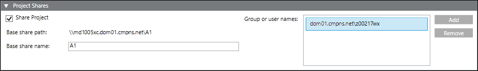

Share the Project Folder on the Server
Using the SMC on Server you have created a project and the project folder is available on the Server computer at a known path. In order to work with the Server project, the logged on Windows users on a Client/FEP or remote web (IIS) server, must have access to the Sever project subfolders.
Use the following procedure to share the server project folder using Project Shares expander in SMC.
Alternatively, you can also share the server project folder externally using Windows. However, if you do so, it is recommended to checking the Project Share Consistency before working with the Server project in the deployments such as Client/Server setup or Windows App Client on the remote Web server (IIS).

NOTE:
It is recommended to share the Server project subfolders before creating the project on the Client/FEP. This is because, you need provide the path of the shared Server project folder at the time of Client/FEP project creation.
The local Installed Client and the local web server do not need a file share, only the access rights on the folders in the project directory have to get configured. You do not need to explicitly assign them by adding the user in the Project Shares expander.
- You have created a project using the SMC on the Server.
- You have a list of logged on users on the Client/FEP or remote web server (IIS) that are going to launch Installed Client on Client/FEP or launch Windows App Client on the remote web server (IIS).
- The project that you want to share is stopped.
- The Project Shares expander is available in the Project Settings tab.
- In the SMC tree, select Projects > [project].
- Open the Project Shares expander and perform following steps:
a. Select Share Project check box.
b. Edit the Base share name, if required. By default, the selected project’s name displays.
c. Click Add to add users from the domain that need permission to access the project from the various clients. These are Windows domain users in the Active Directory.
d. In the Select User dialog box, enter the user name or group from your system who need access to the project either from the current station or other domains.
e. Click Check name.
f. Click OK. - The user or user group is added in the Project Shares expander.
- Click Save
 .
. - The Base share path is added for the shared server project.
- The individual project subfolders (devices, documents, graphics, libraries, profiles, and shared) are shared and appropriate security permissions are configured for the each subfolder. (see Confirming Security Permissions on Project Subfolders in Share the Project folder, Configure User and Set Permissions using Windows)
Tips:
- If sharing the project folder fails and the SetPermissions exception displays in the SMC log, see Unable to Set Security Permissions on Websites/Projects Folder.
- You have changed from domain environment to workgroup but the old sharing is not visible in the Project Shares expander in SMC. The same is applicable if you are working in workgroup and change to domain environment. See Troubleshooting the Environment Change for Already Shared Projects.
